with Finesse Client Master sync and Upload to Finesse — step-by-step procedure
Document number
CNE-SOP-02
Version
1.0
Effective date
23 Nov 2026
Applies to
Contract Note Extractor installed with ContractNoteExtractor-Setup.exe (Finesse version)
Process owner
Prepared by
Reviewed by
Approved by
All clients, PANs, codes, accounts and stocks shown in this SOP are invented sample data.
Contents
Purpose and scope
Roles
Key terms
Installation
First start and sign-in
The screen at a glance
Client Master (Finesse sync)
Output template
Daily procedure — step by step
Errors and how to fix them
Broker notes
Controls and verification
Security, backup and updates
Appendix A — Exceptional-password file
Appendix B — Status and badge glossary
Appendix C — Daily checklist
Revision history
1. Purpose and scope
This SOP explains how to turn broker equity contract notes (PDF) into posted transactions in Finesse: the tool unlocks each PDF, extracts client, trading account, stock/ISIN, buy/sell, quantity, rate after brokerage and trade date, fills the output template and uploads it to Finesse Equity Staging, where rows are posted only after your confirmation.
In scope: equity cash-segment contract notes (delivery and intraday) from the supported brokers (section 11).
Out of scope: F&O / currency / commodity, scanned image-only PDFs, DP-charges statements and ledgers (ignored automatically).
Everything runs on this PC. The tool talks only to Finesse; PDFs and passwords are not sent anywhere else.
2. Roles
Role
Responsibilities
Admin
Installs and updates the tool; keeps the Finesse login working; runs Sync from Finesse; maintains exceptional passwords; manages users; uploads to Finesse and confirms posting.
Operator (normal user)
Adds contract notes, runs extraction, resolves pop-ups, reviews rows, downloads the filled template. Does not see the Client Master or upload to Finesse.
Checker
Verifies extracted rows against the contract notes before they are posted (section 12).
3. Key terms
Term
Meaning
Client Master
The client list (name · client code · PAN · trading account) fetched from Finesse every day at 08:00 and on demand.
PAN rule
By default a contract note's password is the client's PAN in capital letters.
Exceptional password
A password that is not the client's PAN. Only these clients are listed in the Client Master screen.
Trading account
The broker trading account (e.g. D100101) shown in Finesse on the client's profile → Portfolios. Needed to upload a row to Finesse.
Equity Staging
The Finesse screen where uploaded transactions wait until they are posted.
4. Installation (Admin, once per PC)
1
Download ContractNoteExtractor-Setup.exe from the "latest" download page (link provided by the tool owner).
2
Double-click it. If Windows shows “Windows protected your PC”, click More info → Run anyway. Approve the admin prompt.
3
Click Next. Keep the folder C:\Program Files\Contract Note Extractor. On Select Additional Tasks tick Create a desktop shortcut, and tick Start the tool when Windows starts if the daily 08:00 Finesse sync should run automatically.
4
Click Install, then Finish with “Open Contract Note Extractor now” ticked.
5
The first start opens a setup window. Enter the Finesse User ID, Finesse password (typing is hidden) and the PAN used for Finesse login, then answer Y to test the login. Wait for [OK] Finesse login OK.
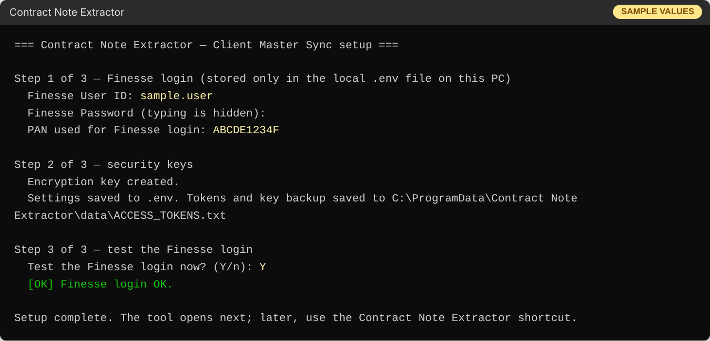
Figure 1 — First-start setup (sample values)
Back up the key file. Setup writes C:\ProgramData\Contract Note Extractor\data\ACCESS_TOKENS.txt. It contains the encryption key; without it saved PANs and passwords cannot be read. Copy it to the secured IT backup location. Do not share it.
The Start menu folder Contract Note Extractor also has: Change Finesse login, Test Finesse login, Sync clients from Finesse now and Settings and data folder.
5. First start and sign-in
1
Open Contract Note Extractor from the desktop. A small console window starts (keep it open — it is the tool's service) and the tool opens in the browser at http://127.0.0.1:8766/.
2
Sign in with username admin and password admin.
3
Choose a new admin password (min. 4 characters), enter it twice and click Save & continue. Keep “Keep me signed in on this device” ticked on a personal PC — the tool will not ask again until Log out.
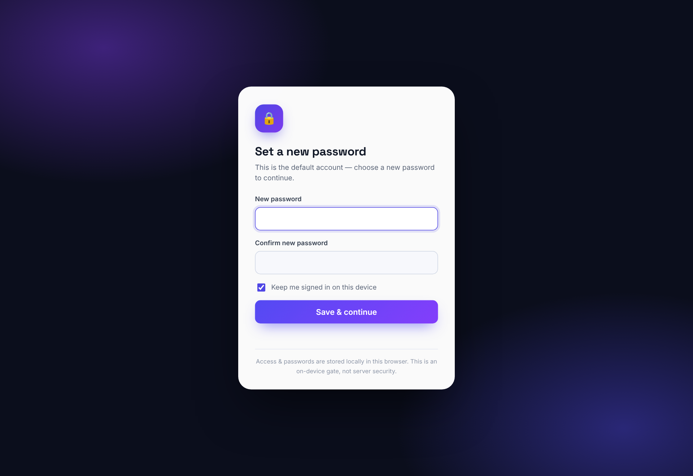
Figure 2 — Setting the admin password on first sign-in
4
Create a user for every person: header Users → enter username, password, role (Normal user for operators) → Add user. Use Reset / Disable when needed; the Sign-in log tab records every sign-in.
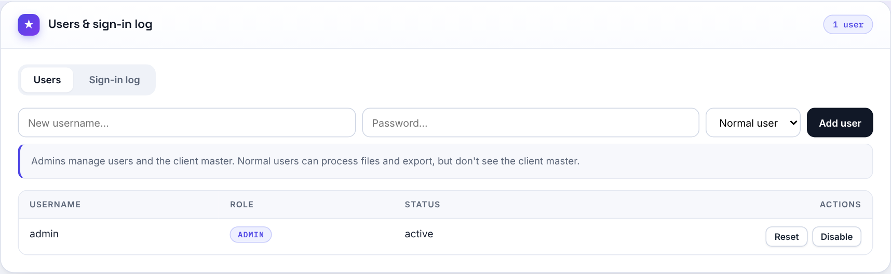
Figure 3 — Users and sign-in log (admin only)
6. The screen at a glance
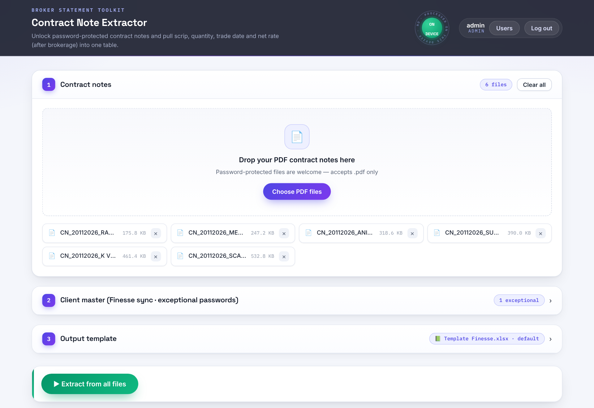
Figure 4 — Main screen (admin view)
Part
Use
1 · Contract notes
Add the PDFs. Clear all removes every PDF and its results.
2 · Client master(admin)
Finesse sync status, Sync from Finesse, exceptional passwords. Click the title to open/close.
3 · Output template(admin)
Template file and options. Click the title to open/close.
▶ Extract from all files
Unlocks and reads every PDF.
Extracted trades
Results, warnings and the export / upload buttons.
7. Client Master — Finesse sync (Admin)
7.1 Check the connection
1
Click 2 · Client master. The status line must show a green dot — Connected · last synced …. No token has to be entered on this PC.
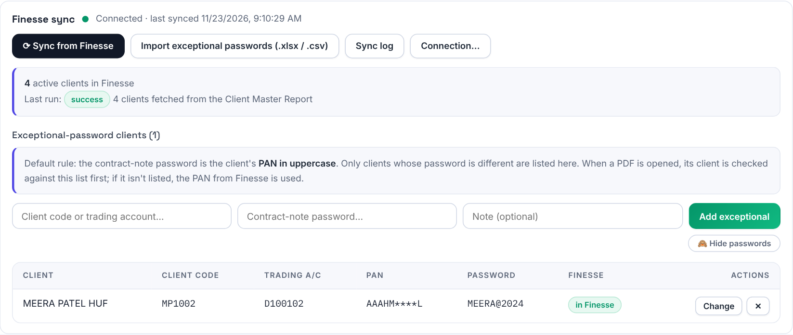
Figure 5 — Finesse sync connected, one exceptional-password client (sample)
7.2 Sync clients from Finesse
1
Sync runs automatically every day at 08:00 while the tool is running. To refresh now, click ⟳ Sync from Finesse and wait for Last run: success.
2
Click Sync log to see each run: fetched, added, updated, missing and errors. A failed run shows the reason (section 10.7).
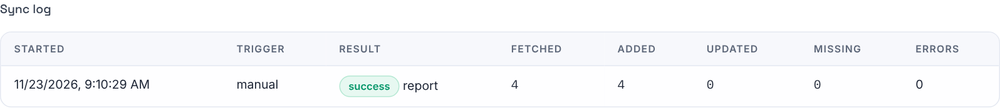
Figure 6 — Sync log
During sync, clients whose trading account is missing in the Finesse client list are looked up on their Finesse profile → Portfolios automatically (re-checked at most every 7 days).
7.3 Exceptional passwords
Default rule: password = PAN in capitals. Add a client here only when the broker uses a different password.
1
Type the client code or trading account, the contract-note password and an optional note (who confirmed it).
2
Click Add exceptional. A password equal to the PAN is refused (the default rule already covers it).
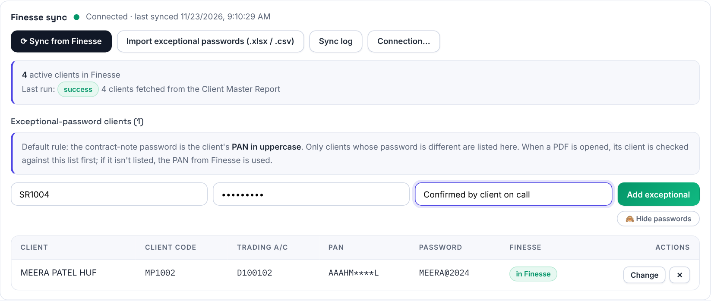
Figure 7 — Adding an exceptional password (sample)
Bulk:Import exceptional passwords (.xlsx / .csv) — format in Appendix A. Rows whose password is the PAN are skipped.
Check / change / remove:👁 Reveal passwords, then Change or ✕ on the row.
Offline fallback (lower part of card 2): a local Client Name · Trading Account · Password file, used only if the service is not reachable.
8. Output template (Admin)
A default template is built in. To use your own, open 3 · Output template → Upload new template (.xlsx). Set the options once; they are remembered.
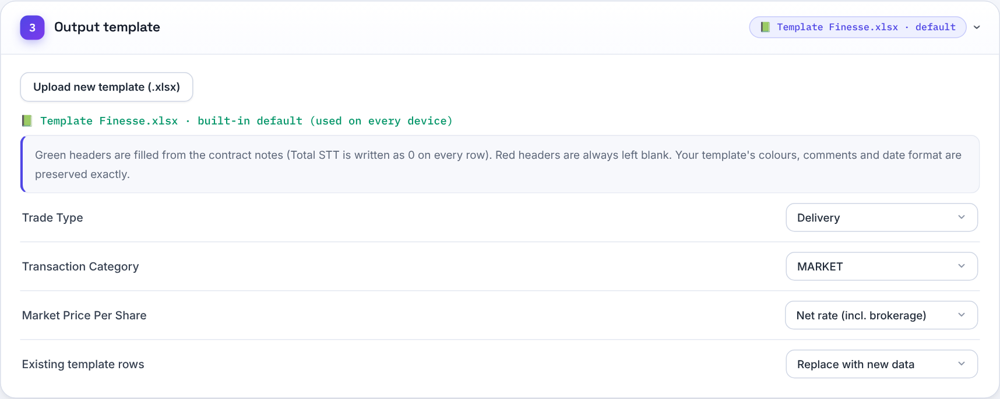
Figure 8 — Output template and options
Option
Standard setting
Trade Type
Delivery (Intraday only for intraday notes)
Transaction Category
MARKET
Market Price Per Share
Net rate (incl. brokerage)
Existing template rows
Replace with new data
9. Daily procedure — step by step
1
Collect the PDFs. Save the day's contract notes in one folder. Keep the broker's file name; if you rename, end it with _<client name>.pdf or include the client code — this helps the password lookup.
2
Open the tool from the desktop shortcut (keep the console window open). Check card 2 shows Connected.
3
Add the PDFs: drag them onto card 1 · Contract notes or click Choose PDF files. Check the count, e.g. “6 files”.
Extract: click ▶ Extract from all files and wait for the progress bar to finish.
5
Resolve every pop-up and coloured bar — locked files, missing trading accounts, unverified prices — exactly as in section 10.
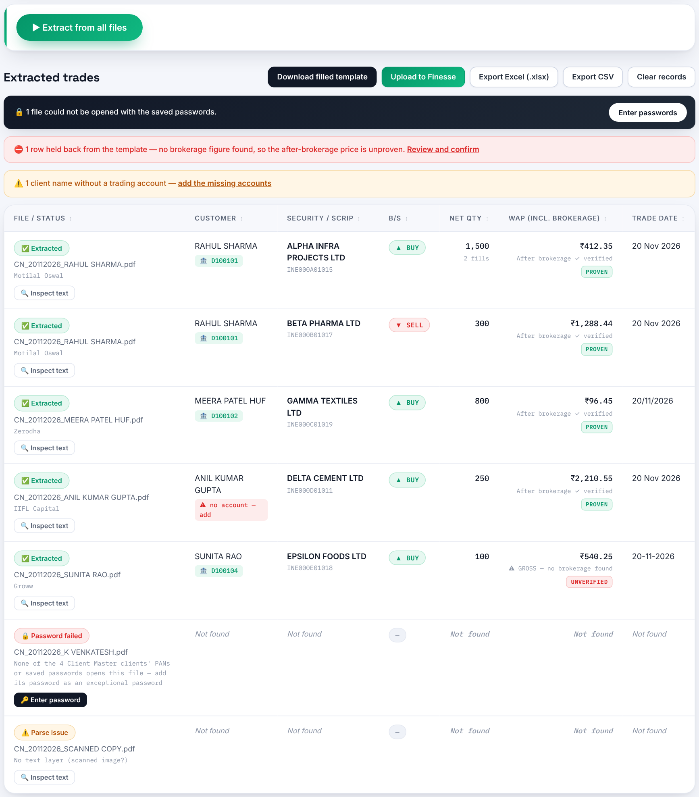
Figure 10 — Results straight after extraction, with the typical errors (sample)
6
Review every row against the contract note: client, 🏦 trading account, stock and ISIN, Buy/Sell, quantity, WAP after brokerage, trade date (not settlement date). See Appendix B for the badges.
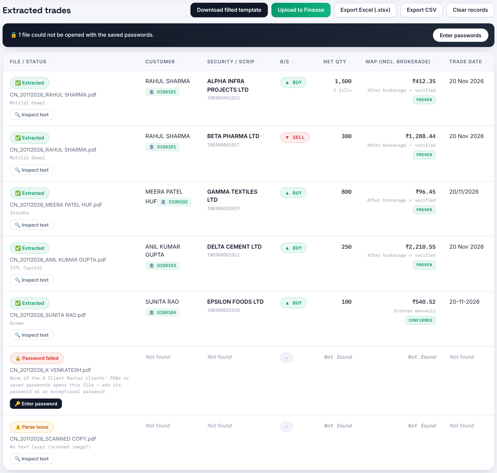
Figure 11 — All rows complete and ready (only the locked file remains)
7
DownloadDownload filled template and save it with the date, e.g. Template-filled_2026-11-20.xlsx (record of what was uploaded).
8
Upload to Finesse (admin) — three stages:
Choose what to upload: click Upload to Finesse. Rows are grouped by trading account. Untick anything that must not go, click Upload N selected. Rows without a trading account are left out — fix them first (10.2).
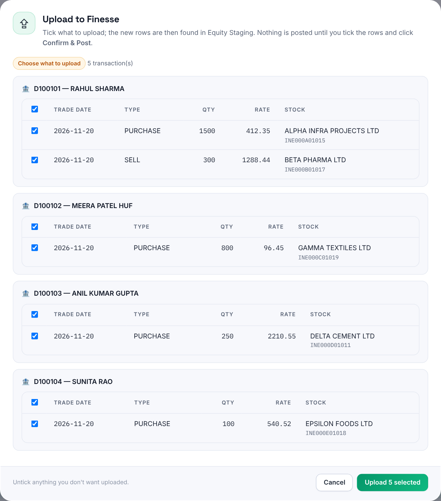
Figure 12 — Stage a: choose the rows to upload
Wait: the tool uploads the file in Finesse and finds the rows in Equity Staging. Keep the page open (Hide closes the window; the job continues — click Upload to Finesse to reopen it).
Confirm: rows marked new — will be posted are ticked. already in staging before this upload is unticked (avoid double posting — tick only if you are sure). unmapped in Finesse / not found in staging cannot be posted (10.5). Click Confirm & Post N selected, or Don't post.
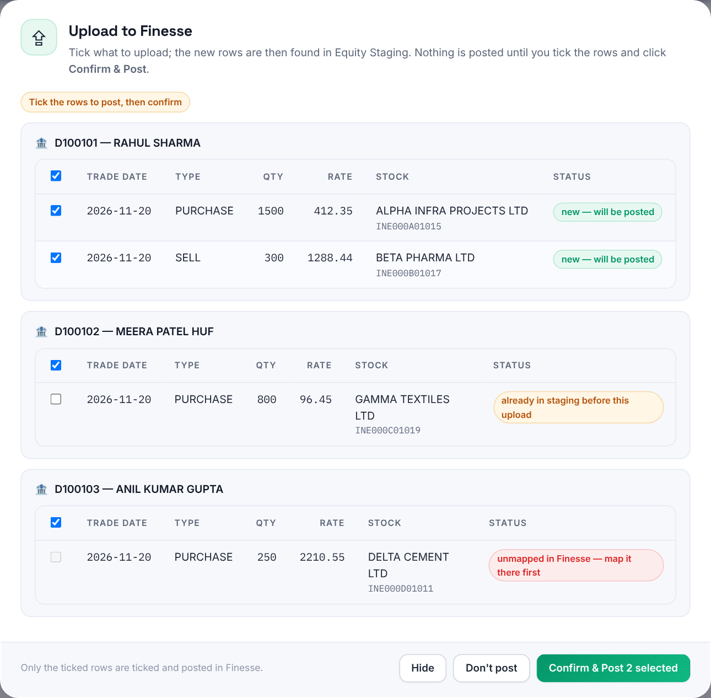
Figure 13 — Stage c: tick the rows to post, then Confirm & Post
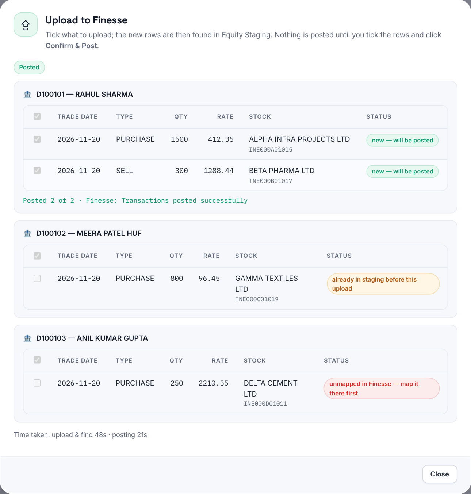
Figure 14 — Result: “Posted 2 of 2”
9
Finish: check in Finesse that the posted transactions appear. Then click Clear all (card 1) so the day's PDFs are removed from the tool.
New contract notes on screen but an earlier upload exists? The tool asks Open previous lot or Upload current lot (new upload) — choose the current lot for new notes.
10. Errors and how to fix them
10.1 🔒 Password failed — file stayed locked
Why: neither the client's PAN nor any exceptional password opened the PDF. The row shows the reason (e.g. “None of the Client Master clients' PANs or saved passwords opens this file — add its password as an exceptional password”).
1
Get the correct password (broker e-mail / client).
2
Click Enter passwords (dark bar) or 🔑 Enter password on the row, type it, click Retry. The file is unlocked and extracted at once.
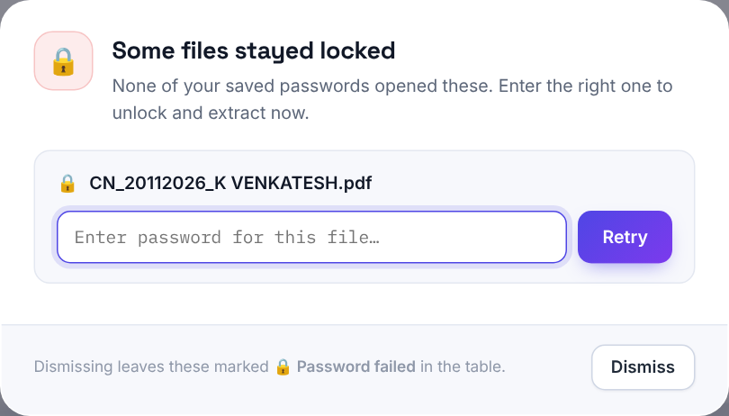
Figure 15 — Entering the password for a locked file
3
Permanent fix (admin): add the password as an exceptional password for that client (7.3) so it opens automatically next time. If the client is not in Finesse at all, add the client in Finesse and run Sync from Finesse.
10.2 ⚠ Trading account not found
Why: the client name on the note has no trading account in the Client Master — usually the trading account is not yet on the client's Finesse profile, or the name differs. The row shows ⚠ no account — add, a yellow bar appears, and the row cannot be uploaded to Finesse.
Click ⚠ no account — add (or the link in the yellow bar). In the pop-up type the trading account, keep Add to my master list ticked, click Save. The account is applied to every row of that client and the yellow bar disappears.
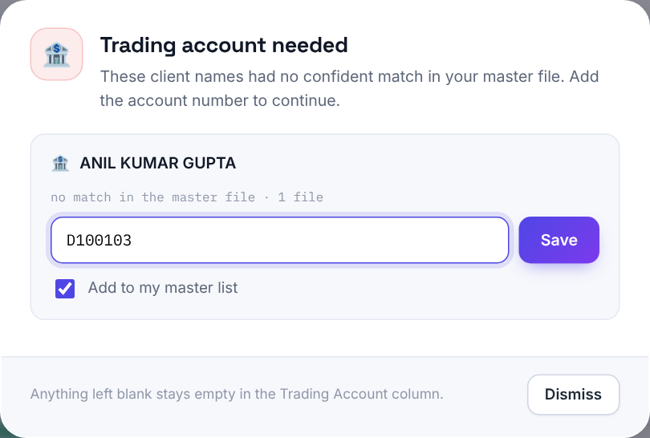
Figure 19 — Trading account typed in, then Save
If the profile has no trading account: the client's portfolio for that broker has not been set up in Finesse. Ask the Finesse admin to add it before uploading. Once it is on the profile, the next Sync from Finesse picks it up automatically.
“Did you mean …?” When a similar name exists (missing middle name, different order), the pop-up suggests it with a % match. Pick it only if it is the same person; an HUF never matches an individual.
10.3 ₹ Price could not be verified
Why: no brokerage figure was found, so the rate after brokerage is unproven; the row is held back from the template and upload (red bar).
1
Open the contract note and find the rate after brokerage (WAP after brokerage / net rate).
2
Type it and click Confirm — or tick “This note has no brokerage — use the rate as shown” if that is correct. The row is marked CONFIRMED and released.
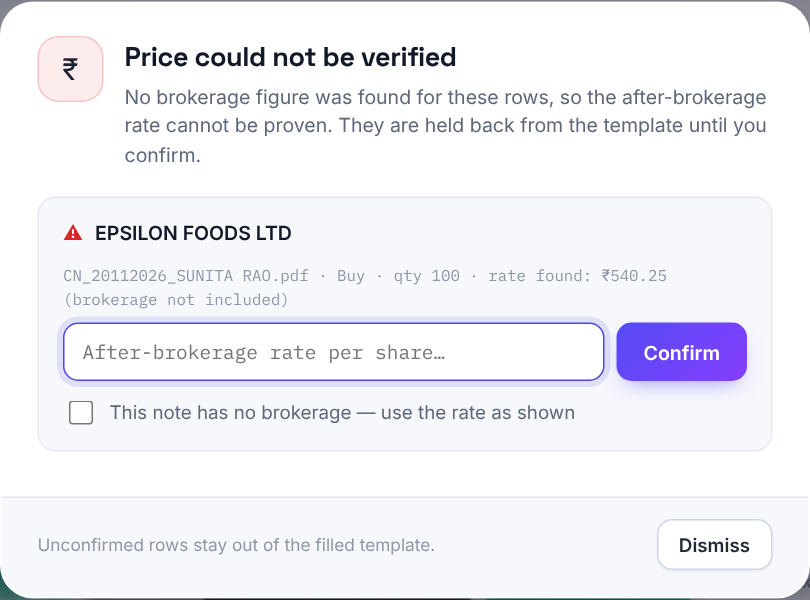
Figure 20 — Confirming the after-brokerage rate (sample)
Why: the PDF is a scanned image, or the broker's layout is not recognised yet (e.g. a client name like “Rem arks” and no trades).
1
Click 🔍 Inspect text on the row. If the box is empty, the PDF is a scan — ask the broker for the digital contract note.
2
Otherwise click Copy text layer and send it, with a screenshot of the note's trade table (client details may be masked), to the tool owner. Do not key the note into Finesse manually without recording it.
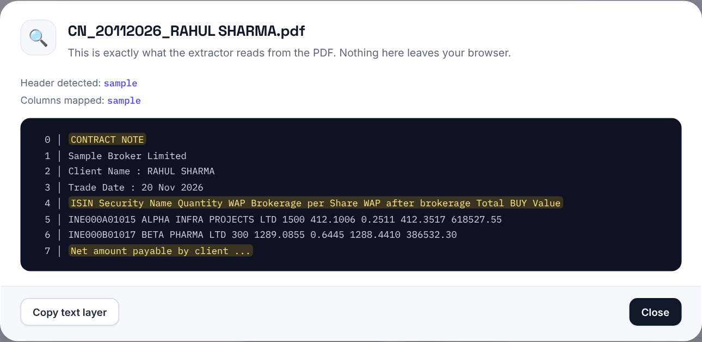
Figure 21 — Inspect text (sample text)
10.5 Upload: “unmapped in Finesse” / “not found in staging” / “already in staging”
Status
What to do
unmapped in Finesse — map it there first
The stock / account mapping is missing in Finesse. Map it in Finesse, then click Upload to Finesse again.
not found in staging
The uploaded row did not appear in Equity Staging. Check Finesse's upload messages; re-upload the current lot.
already in staging before this upload
The same row was already waiting in staging. Leave it unticked unless you are sure it has not been posted.
10.6 🔴 Client Master service is not reachable
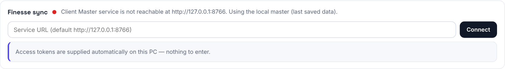
Figure 22 — Service not reachable (red dot)
1
The console window was closed or the PC restarted. Start Contract Note Extractor from the desktop / Start menu and keep its window open; refresh the page.
2
Until then, PDFs use only the offline local master — expect more locked files.
10.7 Sync from Finesse failed
1
Open Sync log and read the error.
2
Login errors: Start menu → Test Finesse login. If it fails, run Change Finesse login and enter the current Finesse user ID, password and PAN. Then Sync from Finesse again.
3
“Layout changed” errors: send the files finesse_report_page.txt and the screenshot in C:\ProgramData\Contract Note Extractor\data to the tool owner. Existing clients stay usable meanwhile.
11. Broker notes
The broker is recognised from the note. Rates are always taken after brokerage and checked with two sums: rate ± brokerage per share = rate after brokerage and quantity × rate = total value.
Broker
What the tool reads
Motilal Oswal
“EQUITY SEGMENT” table. The same ISIN usually appears on two rows (BSE Capital and NSE Capital, often with two spellings of the stock name). They are combined into one row: quantities added, rate = quantity-weighted WAP (across exchanges) after brokerage. Trade date from Trade Date, never Settlement Date.
Post only rows marked new; record any manual change (typed rate, typed account, exceptional password) with the reason.
13. Security, backup and updates
The tool runs only on this PC (127.0.0.1:8766). Finesse credentials are stored only in the settings file on this PC; PANs, passwords and the Finesse session are encrypted.
Back up ACCESS_TOKENS.txt (encryption key) to the secured IT location after installation.
Use your own tool user; log out on shared PCs. Do not share Windows accounts.
Update: close the tool, run the newer ContractNoteExtractor-Setup.exe, Next → Install. Settings and data in C:\ProgramData\Contract Note Extractor are kept. Record the update in the revision history.
Appendix A — Exceptional-password import file
Client Name
Trading Account
Password
Password 2 (optional)
MEERA PATEL HUF
D100102
••••••••
SUNITA RAO
D100104
••••••••
••••••••
Header row required, with a Trading Account (or client code) column and at least one Password column; .xlsx, .xls or .csv.
Passwords equal to the client's PAN are skipped automatically (the PAN rule covers them). Duplicates are skipped.
Appendix B — Status and badge glossary
Badge / status
Meaning
✅ Extracted · 🔒 Password failed · ⚠️ Parse issue
File read and trades found · no password opened it (10.1) · opened but no trades read (10.4)
PROVEN
Rate after brokerage proven by both sums (rate ± brokerage, quantity × rate = total value)
COMPUTED
Rate calculated from rate ± brokerage, not cross-checked with a total value
AS LABELLED
Taken from a column the note labels “net rate”
UNVERIFIED
Gross rate only — held back until confirmed (10.3)
CONFIRMED
Rate entered or accepted manually
🏦 D100101 / ⚠ no account — add
Trading account found / missing (10.2)
“2 fills”
Combined from two lines or rows of the note (e.g. BSE + NSE)